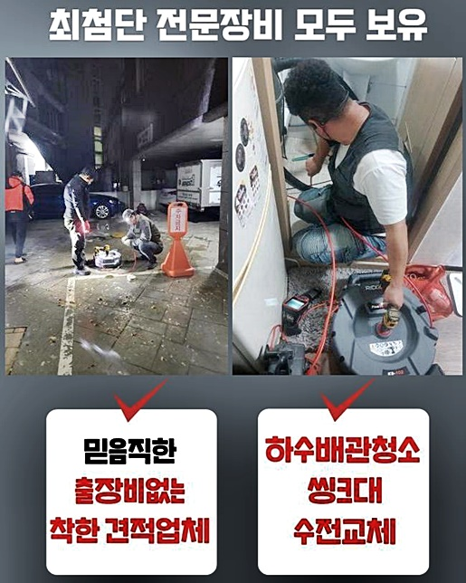
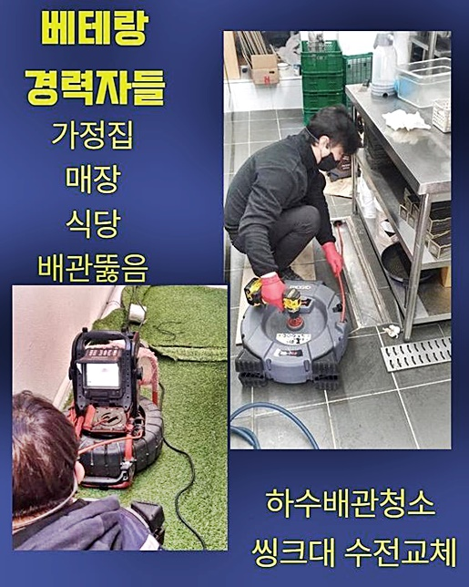
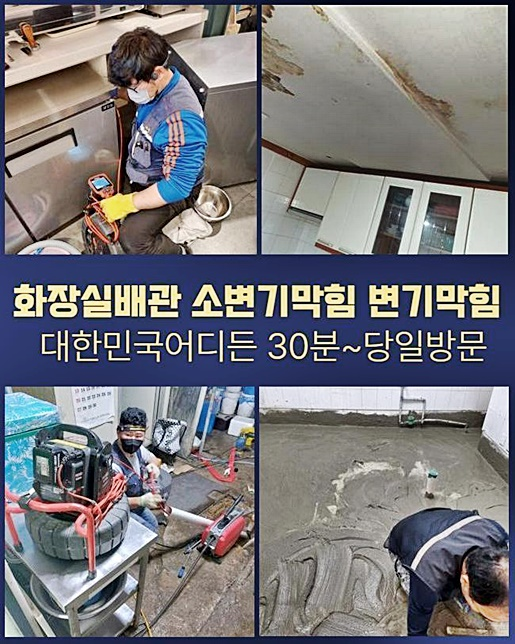
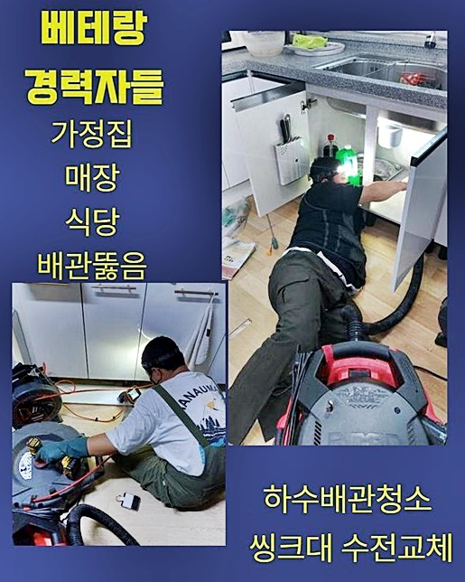
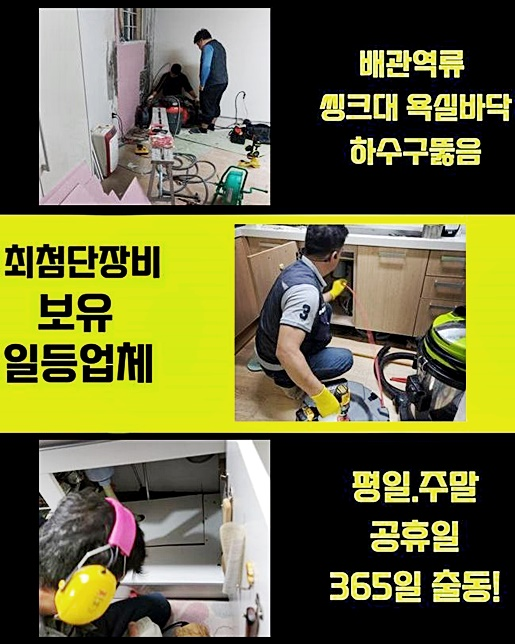
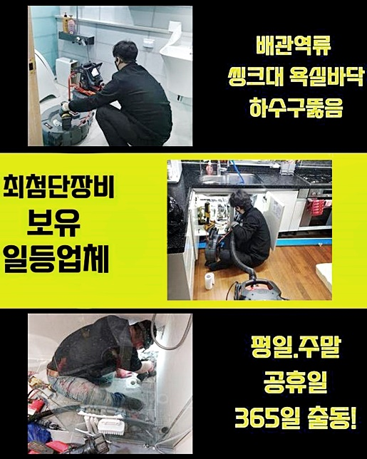

🏠 강서구 화곡동화장실역류 화곡본동 하수구청소 배관공사
용인 하수구막힘 전문 시공 후기

📋 작업 개요
- 위치: 용인
- 서비스 유형: 하수구막힘, 배관막힘, 누수수리, 역류해결, 뚫는업체, 배관청소, 고압세척, 설비공사
- 작업 일시: 2024. 7. 12. 14:18
- 업체명: 하수구수사대 (010-5615-2118)
🔍 문제 상황
강서구 화곡동화장실역류 화곡본동 하수구청소 배관공사
배수 오류가 나타나게된다면 일상의 제한이생겨요
집 뿐만이 아니고 그외의 경우에도 같아요
역류가 발생될 땐 일정수준 오물들만 넘치는것이 아니고 내측에 축적된 찌꺼끼와 냄새들이 생겨나기에 빠르게 해결하는게 우선이에요
최근 방문드린 곳 또한 배수구에서 역류하게되는 바람에 저희들에게 전화를 주셨어요
도착해서 증세를 확인해주었습니다
지하부분의 배관에서 문제가 생긴 상태로서 악취의 이슈도 생겨났습니다
이대로 내부 모습을 볼수가 없어서 검수를 해줄 예정이었는데요
입구쪽에 있는 잔여물질은 걷어낸 뒤 펌프기기를 사용해서 오수를 제거해요
이렇게해야 내시경장비로 점검할 시 심층부까지 깨끗히 보여지죠
내시경기기로 하수관을 주시하였더니 슬러지들이 엉키게되어서 막히게된 모습이였죠
지금까지 온전히 청소가 안되서 문제가 심화된 것입니다
구간마다 이물들이 가득했던 모습이였고 여태 사용된 기름성분들과 음식물등의 잔해로 문제가 발생된거죠
이것과같이 자주 쓰는 곳일 경우 간헐적으로라도 관리하는게 이용되는데요
공동설비의 경우 문제 발생 확률이 많으므로 꾸준히 잔여물질들이 쌓이게 될 확률들이 상승해요

🔎 원인 분석
💡 전문가 진단: 정밀 진단 장비를 사용하여 슬러지의 고착 여부를 판명하고 타격/세척 작업을 실시했습니다.
그리고 이물질은 부유하는 당시엔 점액질의 형태겠으나 축적을 거듭하며 강도가 변하죠
단단히 바뀌며 일반적으로의 대응으론 해결하기 힘들만큼 강건하게 자리잡습니다
위와같은 상황에선 배관 해결사의 실력을 믿고 오차없이 제거하는것이 옳죠
일반적으로 수직배관 끝에서 잔해물이 쌓이게되죠
내시경기기를 써서 하단을 집중하여 관찰했는데요
기름의 잔해물들이 고착되는 바람에 증상을 야기시킨걸 명확하게 파악했습니다
지금껏 알맞는 청소들이 이뤄지질 못해서 고착의 형태들이 심각해서 금일에는 고압노즐분사를 써서 청소들을 실시하고자 했어요
배수관 이곳저곳을 살펴 대형 고압수청소를 썼는데요
전형적으로 실내에 설치된 작은 하수관이면 소형 고압수들을 운용하는데 지금과 같이 내식성이 뛰어난 배수관에서는 대형 고압수청소를 사용해서 작업들을 진행시켜요
구동기와 결합된 고압세척기장비를 이용합니다
일반적으로 고압수를 이용할땐 써서야되는 수돗물을 길러와야하는데 반대로 사용되는 물은 저장을 하거나 부득이하게 주변 상가등에 도움들을 거쳐야 원만한 해결이 진행될 수 있어요
반대로 배관의 모습을 확인하는것이 필요해요
강한 물줄기를 뿜어내어 문제들을 시정하기에 적절한 물을 분사시켜 세척해주는게 중요하답니다
더군다나 연결부분에 강한 물줄기를 가해주면 손상을 입어 누수증세가 발현될 수 있답니다
그렇기에 내시경장치를 써서 배관의 문제들을 확인하는게 우선됩니다
잔여물이 쌓인 지점을 중점하여 세척을 이어나갔습니다

🔧 작업 과정
강한 물줄기를 쏘기도 하지만 세척액과 고온이므로 딱딱해진 잔해물을 잘 제거해줍니다
잔해물을 유화시키고 원활히 청소하도록 도와주기에 여러모로 순기능을 가지고있습니다
이같은 세척법으로 흡착물까지 꼼꼼히 작업해주었죠
고압청소가 이뤄지자 이물들이 제거되면서 통수불가했던 물들이 배출되는걸 보았죠
청소된 슬러지들은 별도로 정리해주고 마무리해줬죠
점검 결과 이쪽 스팟 이외 배수관에도 증세들이 야기되어서 스케일링 과정이 필요했죠
설치된 하수도 안측에 잔해물을 보았는데요
그렇기에 샤프트기기를 가용한 뒤 이물을 제거시켰어요
잔여물이 자리하고있는 위치들을 목표로 설정하고 샤프트장치로 효과를 톡톡히 보았어요
머리부분에 부착된 사슬이 회전되면서 이물을 제거시킵니다
직접 잔여물질을 타격하여 분쇄시키니 슬러지들이 떨어지면서 배관컨디션을 복구시켰는데요
걸러진 이물들을 확인하였더니 점액같은 슬러지가 상당했습니다
그래서 물넘침이 야기되었어요
엘보쪽에 누적된 이물도 서둘러 작업하며 깨끗한 배관복구에 박차를 가했어요
이 시점에 내시경도 사용하여 내부 상황을 체크해가면서 작업을하죠
내시경장치들을 쓰지않고 작업해줄 때에는 하수관의 고착물들이 사라졌나 확인할 수가 없습니다
그렇기에 하수구 작업에서 내시경기기는 절대적이죠
샤프트장치를 사용하여 배관 내측을 세척해주면 고착물들을 꾸준히 관리해줄 수 있답니다
이물들이 오래도록 누적된 경우라면 내식성에 좋지못한 결과들을 선사하니 신경써주셔야 하겠죠?
샤프트 청소를 실시하고서 내시경을 통해 내부 오류를 체크해보았죠
남은 잔여물이 없진않은지 점검해보았는데요
신속한 물의 흐름이 행해져야 막혀버리는 문제들이 발생되지 않는답니다
하수관은 적합한 기울기를 확보시키는게 우선되므로 뚫어내는 시공 뒤에도 통수가 되는지 기필코 확인시켜드려요
작업 후 내시경장비로 관찰하니 잔해가 없어진것을 확인했어요
그런뒤에 배수구로 하수를 배출해주며 빠르게 흘러가나 주시해보았는데요


✅ 작업 완료
다행히 조속하게 통수가 이뤄지는걸 보았어요
추후라도 하수시스템 오류를 마주하는 불상사는 없어요
그때그때 청소를 해주셔야 배관을 원만하게 사용할 가능성이 크죠
이물들이 대량으로 잔존하면 이와 달리 하수도가 역류되어 안에서 증상들을 야기시켜요
주기성 띄는 점검과 일상 중에 기름들이 침전되지 못하도록 주의해 주시는 필요하죠
저희의경우 뛰어난 실력을 바탕으로 다양한 문제들을 해소시켜드려요
전문가의 지식이 요구된다고 판단되시면 언제라도 연락주시면 되겠습니다




⚠️ 베란다 누수 및 방수 관리 방법
- ✅ 비가 많이 올 때 창틀 주변이나 아래층 천장에 얼룩이 생기는지 정기적으로 확인해 보세요.
- ✅ 우수관 주변 실리콘 마감이 들뜨거나 깨진 틈새가 있는지 손상 여부를 수시로 체크하세요.
- ✅ 베란다 바닥 타일의 줄눈(메지)이 소실되면 그 틈으로 물이 침투하여 누수가 유발됩니다.
- ✅ 누수 의심 증상 발견 시 방치하면 아래층 손실이 커지므로 즉시 전문가의 진단을 받으십시오.
💡 핵심 정리
- 확실한 장비 작업(내시경 점검 및 샤프트 스케일링)으로 원인을 뿌리 뽑습니다.
- 작업 후 1년 이내에 동일한 부위 재발 시 100% 무상 A/S 서비스를 보장합니다.
- 서울 · 경기 · 인천 전 지역에 24시간 언제든 긴급 출동할 수 있도록 항시 대기 중입니다.
❓ 자주 묻는 질문 (FAQ)
🚨 용인 하수구막힘 문제로 고민이신가요?
정확한 원인 진단과 확실한 시공으로 재발 없는 해결을 약속드립니다.
24시간 긴급 출동 | 서울 · 경기 · 인천 전지역 | 1년 내 재발 시 무상 A/S